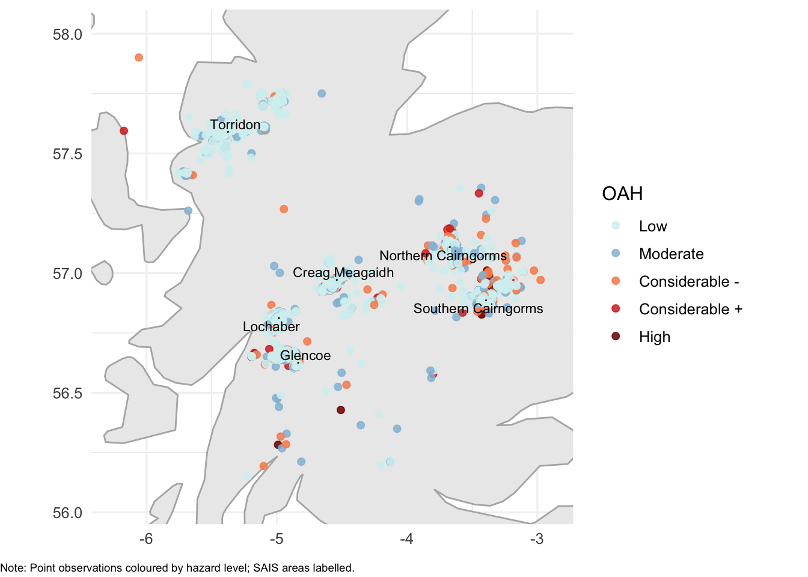
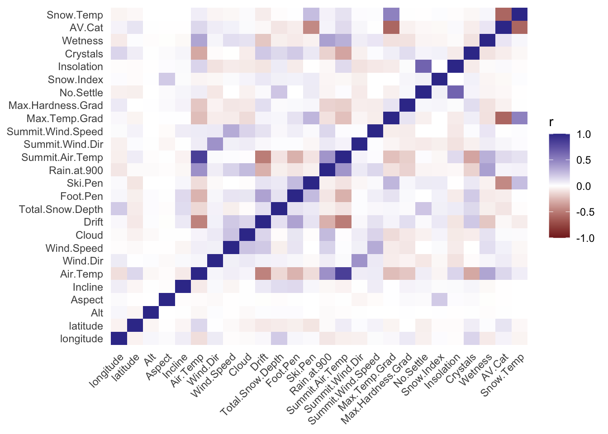
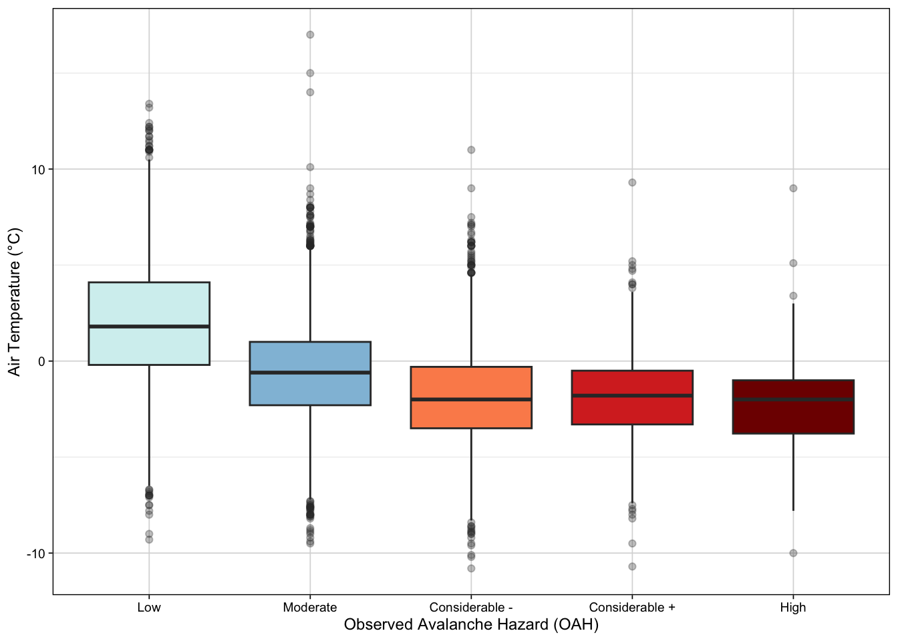
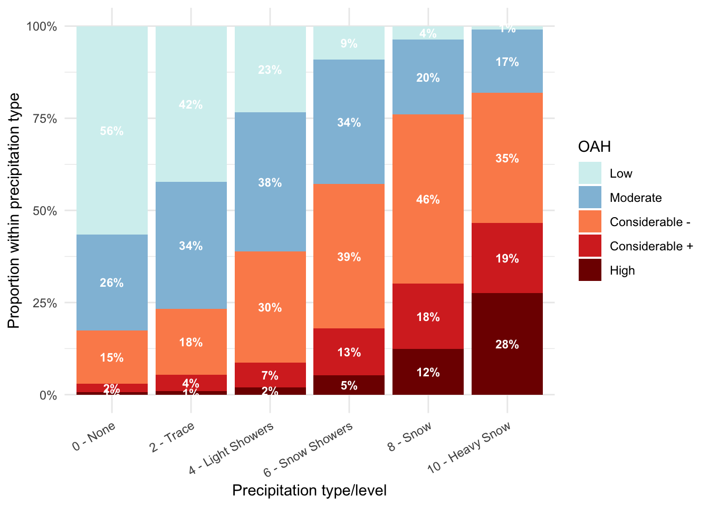
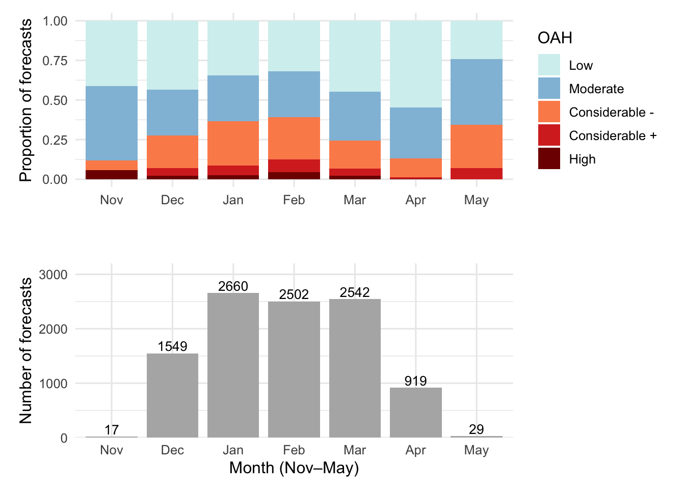
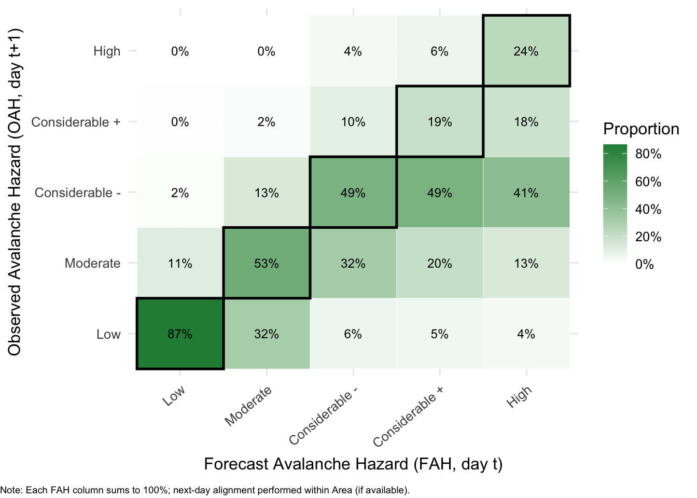
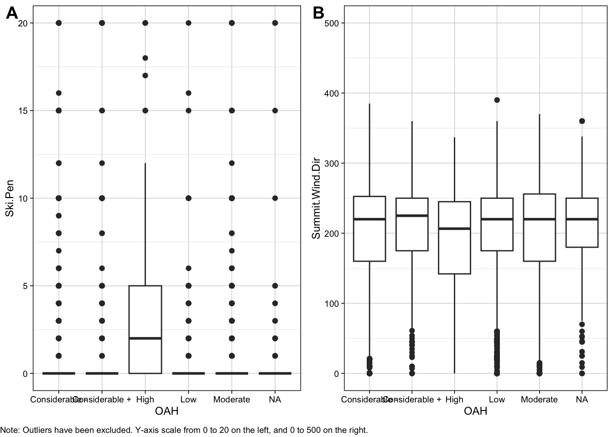
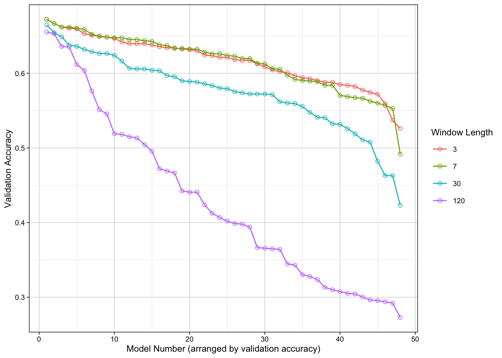
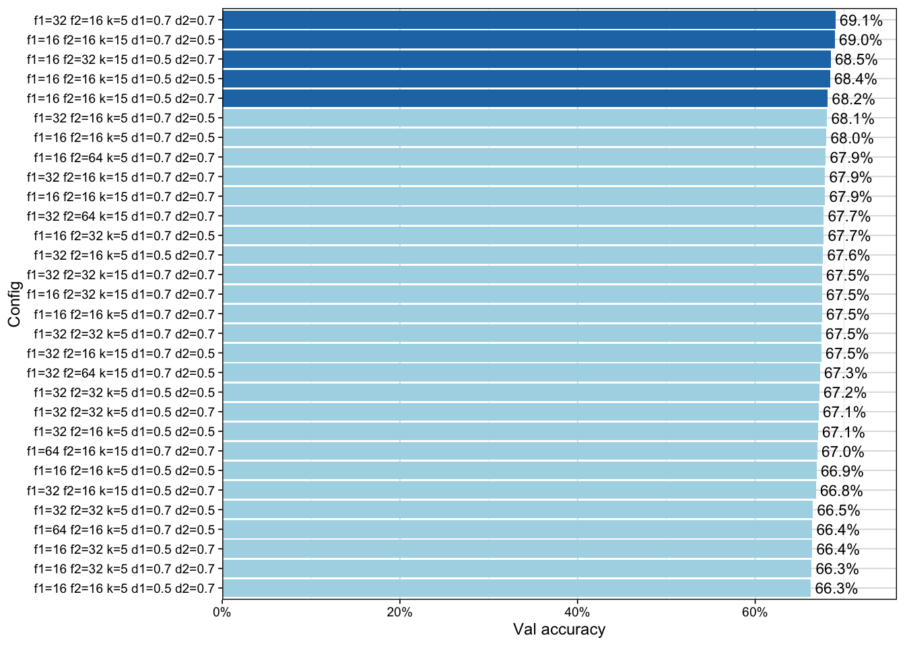

DS4I - Project Writeup
Photo by Nicolas Cool on Unsplash
Introduction
Literature Review
Snow avalanches are a recognised hazard in snow-prone mountain regions worldwide. Unlike in the Alps, avalanches in Scotland rarely impact settlements and infrastructure, but pose significant risks to recreational users in the Scottish Highlands (Bain, 2024; Diggins, 2009; Ward, 1980). The rising popularity of winter activities such as climbing, walking, and skiing has increased exposure to avalanche-prone terrain, resulting in injuries and occasional fatalities each year (Scottish Avalanche Information Service [SAIS], 2024; Webster, 2020). These risks prompted studies of Scottish snowpack and forecasting startegies beginning in the 1970s (Langmuir, 1970; Spink, 1970; Beattie, 1976; Ward, 1980; Ward & Beattie, 1985). However, early work was largely descriptive, relying on snow-pit measurements and expert judgement to link snow properties and weather to avalanche risk. Building on this, Ward (1984) applied one of the first predictive avalanche forecasting models for Scotland.
Avalanche modelling is inherently complex, where predictions depending on multiple interacting factors (Choubin et al., 2019; Herwijen et al., 2016; Hendrick et al., 2023; Pozdnoukhov et al., 2008; Singh & Ganju, 2008). This challenge is heightened in regions with highly variable weather (Sharma & Ganju, 1999). Early statistical methods, such as nearest neighbours, supported forecasters by relating current weather to past avalanche events, however, were prone to overfitting and struggles with high-dimensional data (Blagovechshenskiy et al., 2023; Kala et al., 2025; Pozdnoukhov et al., 2018; Singh & Ganju, 2008). Using a dataset from Lochaber, Scotland, Pozdnoukhov et al. (2008) reported that support vector machines (SVMs) performed similarly to nearest neighbours while handling high-dimensional data more effectively and producing richer forecasts. SVMs for avalanche forecasting have also proven successful in Iran, India, Switzerland, and Tibet (Choubin et al., 2019; Rahmati et al., 2019; Schirmer et al., 2009; Tiwari et al., 2021; Wen et al., 2022).
In recent years, more complex machine learning (ML) algorithms such as regression trees, random forests, and neural networks have demonstrated strong predictive performance in avalanche forecasting (Blagovechshenskiy et al., 2023; Choubin et al., 2019; Gauthier et al., 2025; Hendrick et al., 2023; Rahmati et al., 2019; Singh & Ganju, 2018; Tiwari et al., 2021; Wen et al., 2022). Avalanche datasets are often high-dimensional, and using forecaster-led feature selection can be highly subjective and variable (Helbig et al., 2015; Pozdnoukhov et al., 2008). Hybrid approaches, which combine ML tools (e.g., variable importance plots) with forecaster-led feature selection have shown practical value (Gauthier et al., 2025). However, fully data-driven forecasting methods, particularly neural networks (NNs), offer important advantages.
NNs simulate brain processes through interconnected nodes, capturing complex, nonlinear relationships (Blagovechshenskiy et al., 2023; Sharma et al., 2023; Tu, 1996). By processing all inputs simultaneously, they learn interactions and patterns without prior knowledge of which variables matter most (Blagovechshenskiy et al., 2023; Fromm & Schonberger, 2022; Sharma et al., 2023). Applications in Switzerland, Kazakhstan, and India show that NNs not only perform strongly but can also assess the relative importance of variables to avalanche risk (Fromm & Schonberger; Sharma et al., 2023; Singh & Ganju, 2008). This makes them particularly well suited for high-dimensional avalanche datasets and situations with limited domain knowledge or uncertain predictors.
Despite advances in data-driven avalanche forecasting worldwide, research specific to Scotland remains limited in three ways:
(1) Few published studies exist (only 9 relevant peer-reviewed papers exist on Scopus, with the most recent study conducted in 2011 (keywords: ( “avalanche forecasting” OR “avalanche prediction” ) AND Scotland))
(2) The restricted range of statistical approaches explored (only KNN and SVM) (Joachim et al., 2004; Pozdnoukhov et al., 2008; Pozdnoukhov et al., 2011; Purves et al., 2003)
(3) The focus on only a few regions in Scotland (primarily the Cairngorms and Lochaber regions)
This limited interest likely stems from the highly localised nature of avalanche risk in Scotland, which generally occurs in remote areas and affects relatively few people (Diggins, 2009; SAIS, 2024). Nevertheless, improved avalanche forecasting is increasingly important under changing climate conditions, which may alter snowpack properties and avalanche risk (Gauthier et al., 2025; Werritty & Sugden, 2013). A detailed discussion of climate change, however, is beyond this paper’s scope.
The present study aims to extend forecasting research in Scotland both spatially and methodologically by applying three NNs (Feedforward, Convolutional, and Recurrent) trained on combined data from the following six regions of Scotland: Creah Meagaidh, Glencoe, Lochaber, Northern Cairngorms, Southern Cairngorms, and Torridon.
<insert paragraph explaining modelling approaches of prev papers + this project’s modelling approaches. I.e. the neural net architecture>
Hypothesis???? We can workshop together
Context and Dataset
Scotland has a mild, wet, temperate maritime climate influenced by the North Atlantic Ocean and persistent south-westerly winds (Pozdnoukhov et al., 2008; Scottish Government, 2011). These conditions produce rapid temperature changes, frequent heavy precipitation (snow or rain), and strong winds. With its highest peak, Ben Nevis (1345 m), Scotland’s mountains are low compared to alpine ranges (~4000 m), resulting in a snowpack that is typically shallower, wetter, and more variable (Britannica, 2025; Pozdnoukhov et al., 2008; WSL Institute for Snow and Avalanche Research SLF, 2016). Rapid freeze-thaw cycles, rain-on-snow, and wind redistribution further destabilise snow, creating avalanche risks that can appear and disappear within a short time (Diggins, 2009; Pozdnoukhov et al., 2008; Purves et al., 2003; Scottish Government, 2011). Snowpack conditions also differ regionally; the West is strongly maritime, with mild and wet winters, while the North and East are colder and drier (MetOffice, 2010). Scotland’s climate is thus highly variable spatially and temporally, adding to the complexity of avalanche risk prediction.
This paper uses a 15-year archive of avalanche forecasts from Scotland across the six areas of Creah Meagaidh, Glencoe, Lochaber, Northern Cairngorms, Southern Cairngorms, and Torridon, produced by the SAIS (2025). Figure 1 illustrates the spatial distribution of observations, with points marking individual events and labels indicating area locations. Total observations by area and hazard category (Table 1) reflect differences in observation frequency rather than absolute avalanche activity. Cairngorms (Northern and Southern) and Lochaber, located in the colder and drier North and East, have the most recorded observations, whereas Torridon in the maritime West has substantially fewer. “Low” and “Moderate” hazard levels dominate across all areas, while “High” hazard events are rare and concentrated in Northern Cairngorms and Lochaber.

| Area | Low | Moderate | Considerable - | Considerable + | High | Total |
|---|---|---|---|---|---|---|
| Creag Meagaidh | 636 | 545 | 413 | 155 | 63 | 1812 |
| Glencoe | 716 | 524 | 405 | 109 | 58 | 1812 |
| Lochaber | 597 | 498 | 506 | 116 | 56 | 1773 |
| Northern Cairngorms | 655 | 567 | 501 | 122 | 46 | 1891 |
| Southern Cairngorms | 751 | 546 | 383 | 72 | 35 | 1787 |
| Torridon | 678 | 373 | 85 | 7 | 0 | 1143 |
Data cover the Scottish winters (November to April) from the December 2009 to March 2025. Predictor variables are categorised into three main groups, including (1) position and topography, (2) weather, and (3) snowpack test, all collected at the forecast location. Each observation also includes the date and the forecast area (metadata). For an overview of the predictors available, see Table 2 below.
| Predictor_Group | Variables |
|---|---|
| Metadata | date, area |
| Position and Topography | longitude, latitude, altitude, aspect of slope, incline of slope |
| Weather | air temperature, wind direction, wind speed, cloud cover, precipitation code, snowdrift, total snow depth, foot penetration, ski penetration, rain observed at 900m elevation, summit air temperature, summit wind direction, summit wind speed |
| Snowpack Test | max. temperature gradient, max. hardness gradient, no.settle, snow.index, insolation, crystals, wetness, AV.Cat, and snow temperature |
Exploratory Data Analysis
a. Feature Map Correlations
The Scottish avalanche dataset contains several features that are moderately to strongly correlated, while others appear largely independent (Figure 2). From a modelling perspective, highly correlated features can increase complexity and obscure unique contributors, however, can also capture the multifactorial nature of avalanche risk. In the context of NNs, the presence of correlated variables is not inherently problematic, since the model can learn non-linear interactions. However, strong correlations can increase the risk of overfitting if the network memorises patterns rather than generalising to new data.
The highest correlation found was between summit air temperature and air temperature (r = 0.85), indicating strong redundancy. Nevertheless, both variables were retained as each likely capture a different aspect relevant to forecasting (i.e., summit conditions versus broader conditions). Air temperature is an identified key driver of avalanche conditions and is expected to be an important predictor in the NNs (Fromm & Schonberger, 2022; Gauthier et al., 2025; Pozdnoukhouv et al., 2018; Souckova et al., 2022; Ward,1980). Exploration of air temperature across observed avalanche hazard (OAH) levels further supports its importance in forecasting (Figure 3). Higher hazard categories are generally associated with lower observed air temperatures, with “Considerable -”, “Considerable +”, and “High” hazards centred below 0 °C. “Low” hazard days show medians above freezing and a wider variability. The transition at “Moderate” hazard, where temperatures cluster around 0 °C, reflects conditions that can either stabilise or destabilise the snowpack through freeze-thaw cycles. These patterns highlight Scotland’s sensitivity to rapid temperature shifts and their impact on avalanche activity (Diggins, 2009; Pozdnoukhov et al., 2008).
Other correlations with 0.5<|r|< 0.80 are moderately strong but remain informative and manageable, as NNs can accommodate interdependent inputs.


b. Precipitation Type
The distribution of OAH levels varies clearly across different precipitation types (Figure 4). “Low” hazard predominates under conditions of none (0) or trace (2) precipitation, whereas higher hazard categories become increasingly prevalent as snowfall intensity increases. Heavy snow (level 10) is associated with a substantially larger share of “Considerable” and “High” hazard ratings (81.9 %). This aligns with existing knowledge of the Scottish climate, where rapid weather shifts and frequent rain or snow-on-snow events contribute to unstable snowpack conditions (Pozdnoukhov et al., 2008; Purves et al., 2003).

c. Seasonality
Monthly patterns of OAH across the extended avalanche season (November to May) reveal clear seasonal trends (Figure 5). Early (November-December) and late (April-May) months are dominated by “Low” and “Moderate” hazards, while mid-season months (Jan-Mar) contain a higher proportion of considerable and “High” hazards. Most forecasts occur between December and March, highlighting the period of greatest avalanche risk (SAIS, 2024). These patterns reflect the cyclical nature of snowpack development, with mid-winter weather instability driving higher-risk avalanches (Diggins, 2009; Podzdnoukhov et al., 2008; Purves et al., 2003). For modelling, this seasonality indicates that hazard levels are unevenly distributed, however, NNs can accommodate complex, changing relationships between weather conditions and other important variables.

d. FAH vs OAH
Lastly, Figure 6 shows the relationship between forecast avalanche hazard (FAH) on day t and OAH on day t+1. Each column sums to 100%, showing how outcomes were distributed given a specific forecast level. Forecasts of “Low” hazard were highly accurate, with 86.51 % of cases confirmed the following day. This indicates that forecasters were most successful in predicting stable snowpack conditions and low hazard scenarios.
For intermediate levels such as “Moderate” and “Considerable –” the agreement weakens. Only about half of “Moderate” forecasts matched the following day’s observations, with a substantial spillover into “Low” and “Considerable –”. “Considerable –” forecasts split almost evenly between being observed as “Moderate,” “Considerable –,” and “Considerable +.” This pattern shows that there is a challenge in differentiating between neighbouring hazard categories, which may highlight the subjectivity and sensitivity of these intermediate hazard thresholds.
Forecasts of “High” hazard showed weaker reliability. Fewer than one-quarter of these forecasts corresponded to an observed “High” hazard the next day. Most “High” forecasts aligned with “Considerable –” or “Considerable +” outcomes. This shows that there is a tendency towards over-prediction of extreme conditions, or difficulty in anticipating when weather and snowpack instabilities will escalate into truly high-risk scenarios.

The plot shows that the forecast (FAH) is highest in stable, low-risk conditions and lowest at the extremes, with the middle categories marked by uncertainty. This implies that avalanche hazard ratings are best treated as ordinal outcomes for modelling purposes, where the cost of misclassification is not uniform and depends on how far apart the categories are. NNs can capture these patterns well when framed as ordinal classifiers. They can learn that misclassifications most often occur between neighbouring hazard levels, instead of treating all errors equally. Class imbalances will also need to be addressed during model training to ensure the network does not simply default to predicting the most common outcomes.
Data Cleaning and Feature Engineering
Feature engineering focused on creating temporal variables to capture trends not natively handled by a feedforward neural network (FNN). Given that EDA highlighted that OAH varies according to the season and time of year, several variables were derived.
Before removing observations with extensive missing values, we extracted the time of day, day of the week, month, and year from each date. Next, a categorical variable for each avalanche season (December-April, 2009-2025) was created to account for the observed year-on-year increase in risk.
| Variable | Missing (%) |
|---|---|
| AV.Cat | 23.3718 |
| Ski.Pen | 22.5283 |
| Summit.Wind.Dir | 12.3512 |
| Crystals | 9.2587 |
| Summit.Wind.Speed | 8.5184 |
| Summit.Air.Temp | 7.0659 |
| Snow.Index | 6.9815 |
| Max.Temp.Grad | 6.6535 |
| Max.Hardness.Grad | 5.8945 |
| Wetness | 5.3978 |
| Insolation | 4.7512 |
| OAH | 4.2452 |
| Snow.Temp | 3.8422 |
| Aspect | 3.3268 |
| No.Settle | 2.7083 |
| Total.Snow.Depth | 1.5275 |
| Wind.Dir | 1.4806 |
| Wind.Speed | 0.4967 |
| Foot.Pen | 0.3936 |
| Incline | 0.3374 |
| Air.Temp | 0.3186 |
| Cloud | 0.2718 |
| Alt | 0.0562 |
| Note: | |
| All values rounded to 4 decimal places. |
Missing values were also a challenge. Table 3 presents the percentage of missing values for features with incomplete data. Av.Cat was removed because its meaning was unclear and it contained implausible values (e.g., NA, 3, -2, 2, 1, 4, 8800, -1, 0, 1021, 4400, -9999, 99, 88, 44, 5031, 121). Figure 7 shows no clear relationship between ski penetration and OAH, except for “High” risk avalanches; we therefore excluded it since snowfall effects are likely better represented by other variables. Summit wind direction (12.35% missing) was also dropped for lack of a discernible trend.

Lastly, we dropped high-cardinality categorical variables, including osgrid and location. osgrid appeared to be an ID variable with >3000 unique values, which would make one-hot encoding overly complex and was unlikely to indicate risk. Location was also removed, since latitude, longitude, and area already captured spatial information more effectively.
Having dropped these variables, we were left with roughly 36 % incomplete samples. We dropped the remaining samples that contained missing values to maintain complete cases for the models. While retaining more observations would be ideal, the remaining ~7000 were sufficient for representative results. Later, fitting our best model to an imputed dataset yielded a similar accuracy to the complete cases.
Modeling Methodology
There are three main models used in this project to exploit different structural properties of the data: a feedforward multilayer perceptron neural network network (FFN-MLP), a convolutional neural network (CNN), and a recurrent neural network (RNN). The FFN-MLP was expected to handle categorical predictors (e.g., forecasted avalanche risk) effectively, while the CNNs and RNNs were targeted at uncovering temporal or sequential patterns.
A FFN-MLP consists of an input layer, one or more hidden layers of perceptron nodes, and an output layer. Each hidden node computes a weighted sum of its inputs, passes it through a non-linear activation function, and forwards the result to the next layer. The weights, which determine the influence of each input, are initialised randomly and updated iteratively through backpropagation using an optimiser such as gradient descent. The activation functions (e.g., ReLU, sigmoid) introduce non-linearity, enabling the model to capture complex relationships between predictors and the target.
CNNs process data by applying convolutional filters (small weight matrices) that slide across the input space. Each filter computes dot products with local patches of the data, producing feature maps that emphasise spatial or temporal patterns based on the type of filters used. Non-linear activations are then applied, followed by pooling layers that down sample the feature maps to reduce dimensionality while preserving the most important information. One can stack numerous layers of convolutions to learn deeper trends in the data, although we found that 2 layers were a good balance between the model’s complexity and ability to generalise.
RNNs are designed to capture sequential dependencies by incorporating feedback connections. At each time step, the hidden state depends not only on the current input but also on the state from the previous step. This architecture makes RNNs well suited for modeling temporal dynamics in sequential data.
Input feature map (5×5)
Dot‑product output (VALID, 3×3)
Position (1,1) • Value —
Filter weights (3×3)
[add section on RNN]
Data Preprocessing of Neural Networks models
To prepare the data for CNN and RNN, we constructed a 3-dimensional array (number of samples × the time window length × the number of features). Each training sample was created by sliding a fixed window across the data. Within the array, columns represent time steps, and depth represent data features. Since we predict one day ahead, each sample represents the observations within the window, for the next day prediction. Data were standardised to avoid distortion from differing feature scales, and one-hot encoded so each categorical variable is split into multiple binary variable demarcating each category.
To preserve temporal trends for the CNN and RNN, the train and test split was not randomly shuffled. Instead, the first 80% of records were used for training, while the remainder was used for testing, similar to the approach of Fromm and Schonberger (2022).
Convolutional Neural Network
CNN and RNN hyperparameter selection involved two stages. Firstly, several candidate datasets were created with time windows of 3 days, 7 days, 30 days and 120 days. A narrow search was used, training many models to identify the most appropriate window based on validation accuracy, estimated using cross-validation with a 20% holdout set. All models were trained for 60 epochs, except the FNN.
In the second stage, a broader grid search was conducted on the chosen window, selecting the model with the highest validation accuracy. In all our tests presented for the CNN, we assessed architectures with two convolutional layers using the ReLU function in those latent layers, and the softmax function in our input layer to create the class predictions. More complex architectures did not perform better, or meaningfully better. Measures to control for class imbalance were taken for both the cnn and rnn by calculating weights, inversely proportional to the frequency of observations of that class in the training set.

Considering Figure 8 above, we chose a 7 day prediction window. Overall, most models performed best with 3-7 days, while 30- and 120-day windows were meaningfully worse. Validation accuracy was competitive between 3 and 7 days. However, 7 days appeared more robust, as some 3-day models showed much lower accuracy at the extremes.
| hyperparameter | values |
|---|---|
| filters1 | 16, 32, 64 |
| filters2 | 16, 32, 64 |
| kernel_sz | 5, 15 |
| drop1 | 0.5, 0.7 |
| drop2 | 0.5, 0.7 |

After completing the initial window search, an expanded grid search using the hyperparameters presented in Table 4 was conducted. The validation accuracy for the top 30 models is presented in Figure 9 .The best performing model during the initial prediction window search (the first stage of the search) achieved a validation accuracy of 67, while the top model using the chosen window in the second stage of the search reached 69.1%. We stuck with this model, as validation accuracy had not improved meaningfully over the course of the expanded search. The final selected model involved 32 filters in the first layer, followed by a dropout of 70%, then 16 layers in the second layers, followed by dropout of 70% and global average pooling into the final output layer.
Recurrent Neural Network
The approach for the RNN was the same as the CNN discussed above. Firstly, a search over numerous candidate window sizes were completed, and a subsequent expanded search was done as well. In Figure 10 below, the validation accuracy of the models test is presented. We used a combination of two Long Short-Term memory layers (LSTM), with dropout and varied the LSTM units and dropout values in the grid search.

The RNN window search showed more competitive performance. In this case, a window of 30 days appears more robust overall, containing fewer worse performing models towards the extreme end. We therefore conducted an expanded grid search using this window, the results of which are presented in Figure 11 below. The grid search hyperparameters are listed in Table 5.
| Hyperparameter | Values |
|---|---|
| units1 | 16, 32, 64 |
| units2 | 16, 32, 64 |
| drop1 | 0.3, 0.5, 0.7 |
| drop2 | 0.3, 0.5, 0.7 |

From the expanded grid search, the best performing model achieved a validation accuracy of 64.8%. We fitted this model to the full training data and used that to predict onto the test set. Overall, we were satisfied with this search as the validation accuracy had not improved drastically compared to the initial window search; for example, the best model in the first stage reached roughly 60%.
Feedforward Multilayer Perceptron Neural Network
The FFN-MLP was developed for multi-class classification using the H2O deep learning framework. The objective was to predict a five level categorical outcome based on a high-dimensional feature set.
The FFN-MLP architecture was systematically optimised through a randomised discrete grid search to identify the most effective combination of hyperparameters. All candidate models were structured with a consistent input and output layer, while the hidden layer configuration was varied. The input layer comprised 61 nodes, corresponding to the full set of hot-one encoded engineered predictor variables, plus the bias.
The grid search explored architectures containing between two and four hidden layers. Neuron configurations tested included dense layers such as [256, 128, 64], [512, 256, 128], and [128, 64]. The RectifierWithDropout activation function was initially considered to promote non-linearity and mitigate overfitting. The output layer contained five neurons and employed a softmax activation function to generate a probability distribution over the classes.
To counteract the effects of an imbalanced class distribution in the training data, a class-balancing strategy was implemented. Each training observation was assigned a weight inversely proportional to its class frequency, thereby increasing the influence of minority classes during the optimisation of the loss function.
The randomised grid search evaluated a maximum of 216 candidate models, exploring a predefined hyperparameter space. Key hyperparameters and their search ranges are detailed in Table 6 below.
| Hyperparameter | Values |
|---|---|
| hidden | (128,128) (128,64) (64,32,16) (64,32) |
| activation | RectifierWithDropout |
| l1 | 0, 1e-4, 1e-5 |
| l2 | 0, 1e-4, 1e-5 |
| rate | 0.01, 0.001 |
| input_dropout_ratio | 0.1, 0.3, 0.5 |
Each model was trained for a maximum of 200 epochs. An early stopping mechanism was employed to prevent overfitting, which terminated training if the validation set logloss did not improve by a tolerance of at least 1e-4 over 10 consecutive scoring intervals.

Results
Confusion Matrices
Figure 13 displays the confusion matrices for our 3 models. Our FFNN has a clearer diagonal, which is indicative of its stronger performance. The confusion matrix for the RNN is very diffused with widespread misclassifications. Table 8 confirms this observation is indeed the case, as the RNN had the lowest accuracy (59%) and the FFNN had the highest (75%). One limitation of the approach for evaluating the CNN and RNN is that, since the training and tests sets are not shuffled, and high risk avalanches are rare, there are no high risk avalanches in the test set. Therefore, the models ability to distinguish high risk cases is not measured well beyond.
The FFNN had some noticeable misclassifications between Considerable- and Moderate. We see that for 103 cases, the model predicted Considerable- instead of Moderate, which shows that it confuses those two classes a lot. Similarly, 112 Low cases were predicted as Moderate, another pair of classes the model struggles with.
The diagonal of the RNN is the weakest of them all. Its correct predictions are concentrated in Low (752) with spillover to Moderate (165), and its misclassifications are concentrated in Low (197) and Moderate (299) predictions which were actually Moderate instances. This tells us the model often confused Moderate cases as either Low (underestimated hazard) or moderate (overestimated hazard).
In the case of the CNN, almost all predictions go to Low. There is a noticeable concentration on the diagonal for Low classifications (735), and a considerable concentration of Moderate classifications (270). On the off-diagonal, the model misclassified 205 Low instances as Moderate, and 148 Moderate instances as Low. Clearly, the CNN collapsed into predicting these two classes in many cases, and often confused the two classes. The rows for these respective classes are all zeros. This shows that this model fell for imbalance bias, favouring the majority class Low and second most abundance Moderate.

Overall Model Performance
In Table 8 below, we have an overview of each model’s performance. The overall key insights that can be dervied are:
- The FFNN clearly dominates with the highest accuracy, recall, specificity, and precision scores. It would be the best model for both detecting and correctly rejecting classes.
- The CNN serves as a middle grounf, with acceptable accuracy but low recall. This means this model misses many real cases of considerable avalanche hazards.
- The RNN fails overall. Its accuracy, recall and precision metrics are all low, making it unreliable for classification.
| Accuracy | Kappa | Recall | Specificity | Precision | |
|---|---|---|---|---|---|
| FFNN | 0.754 | 0.645 | 0.618 | 0.934 | 0.633 |
| CNN | 0.650 | 0.353 | 0.407 | 0.880 | 0.439 |
| RNN | 0.594 | 0.222 | 0.368 | 0.849 | 0.311 |
The FFNN’s specificity was 0.934, the highest value observed. This tells us that this model is very good at ruling out cases that do not belong to a class. Its recall was 0.618, which means the model correctly identifies ~62% of true cases or in other words, it catches more actual danger levels compared to CNN and RNN. The CNN and RNN specificity scores were 0.880 and 0.849 respectively, which indicates they have fair ability to avoid false alarms of avalanche hazards, but not up to par with the FFNN’s ability. Notably, the RNN’s precision was 0.311, which means when it predicts, its only correct abour 31% of the time. This means the RNN is wrong more often than its not. Contrast that with the CNN’s 0.439 precision (correct a little under half the time) and the FFNN’s 0.633 (correct around 63% of the time).
Model Statistics by Class
Looking at performance statistics by class can help us gain useful insight into each models strenghths and weaknesses, providing a more detailed overview of model behaviour. Table 9, Table 10 and Table 11 summarise our model statistics by class.
| Sensitivity | Specificity | Pos Pred Value | Neg Pred Value | Precision | Recall | F1 | Prevalence | Detection Rate | Detection Prevalence | Balanced Accuracy | |
|---|---|---|---|---|---|---|---|---|---|---|---|
| Class: Considerable - | 0.7812500 | 0.8613782 | 0.5910165 | 0.9388646 | 0.5910165 | 0.7812500 | 0.6729475 | 0.2040816 | 0.1594388 | 0.2697704 | 0.8213141 |
| Class: Considerable + | 0.1772152 | 0.9865682 | 0.4117647 | 0.9576271 | 0.4117647 | 0.1772152 | 0.2477876 | 0.0503827 | 0.0089286 | 0.0216837 | 0.5818917 |
| Class: High | 0.5600000 | 0.9909268 | 0.5000000 | 0.9928571 | 0.5000000 | 0.5600000 | 0.5283019 | 0.0159439 | 0.0089286 | 0.0178571 | 0.7754634 |
| Class: Low | 0.8208270 | 0.9792350 | 0.9657658 | 0.8845015 | 0.9657658 | 0.8208270 | 0.8874172 | 0.4164541 | 0.3418367 | 0.3539541 | 0.9000310 |
| Class: Moderate | 0.7515275 | 0.8523677 | 0.6988636 | 0.8826923 | 0.6988636 | 0.7515275 | 0.7242395 | 0.3131378 | 0.2353316 | 0.3367347 | 0.8019476 |
| Sensitivity | Specificity | Pos Pred Value | Neg Pred Value | Precision | Recall | F1 | Prevalence | Detection Rate | Detection Prevalence | Balanced Accuracy | |
|---|---|---|---|---|---|---|---|---|---|---|---|
| Class: Considerable - | 0.0350877 | 0.9951824 | 0.3636364 | 0.9293059 | 0.3636364 | 0.0350877 | 0.0640000 | 0.0727505 | 0.0025526 | 0.0070198 | 0.5151351 |
| Class: Considerable + | 0.2368421 | 0.9444081 | 0.0957447 | 0.9803123 | 0.0957447 | 0.2368421 | 0.1363636 | 0.0242502 | 0.0057435 | 0.0599872 | 0.5906251 |
| Class: High | NA | 1.0000000 | NA | NA | NA | NA | NA | 0.0000000 | 0.0000000 | 0.0000000 | NA |
| Class: Low | 0.7736842 | 0.7179903 | 0.8085809 | 0.6732523 | 0.8085809 | 0.7736842 | 0.7907477 | 0.6062540 | 0.4690491 | 0.5800893 | 0.7458372 |
| Class: Moderate | 0.5806452 | 0.7431942 | 0.4882459 | 0.8076923 | 0.4882459 | 0.5806452 | 0.5304519 | 0.2967454 | 0.1723038 | 0.3529036 | 0.6619197 |
| Sensitivity | Specificity | Pos Pred Value | Neg Pred Value | Precision | Recall | F1 | Prevalence | Detection Rate | Detection Prevalence | Balanced Accuracy | |
|---|---|---|---|---|---|---|---|---|---|---|---|
| Class: Considerable - | 0.0000000 | 0.9986207 | 0.0000000 | 0.9276105 | 0.0000000 | 0.0000000 | NaN | 0.0722969 | 0.0000000 | 0.0012796 | 0.4993103 |
| Class: Considerable + | 0.3243243 | 0.9141547 | 0.0839161 | 0.9823944 | 0.0839161 | 0.3243243 | 0.1333333 | 0.0236724 | 0.0076775 | 0.0914907 | 0.6192395 |
| Class: High | NA | 1.0000000 | NA | NA | NA | NA | NA | 0.0000000 | 0.0000000 | 0.0000000 | NA |
| Class: Low | 0.7924131 | 0.5244300 | 0.7203065 | 0.6204239 | 0.7203065 | 0.7924131 | 0.7546412 | 0.6071657 | 0.4811260 | 0.6679463 | 0.6584215 |
| Class: Moderate | 0.3556034 | 0.8098271 | 0.4411765 | 0.7485282 | 0.4411765 | 0.3556034 | 0.3937947 | 0.2968650 | 0.1055662 | 0.2392834 | 0.5827153 |
We will start with the FFNN statistics detailed in Table 9. It was especially good at recognising the common classes such as Low and Moderate danger, correctly identifying around 82% of Low cases and 75% of moderate cases. This means that it both caughts most of the true cases and rarely mislabeled other classes as these. However, the FFNN struggled with the rarer categories. For example, it only detected 18% of Considerable+ cases. This suggests some model bias towards classes that were better represented.
The CNN statistics detailed in Table 10 show that this model had mized results. It was able to capture 82% of Low danger cases, which is the majority class, but its performance dropped sharply for the minority cases. Additionally, it only detected 3.5% of Considerable- cases.
Even on a class-by-class basis, the RNN performed poorly overall. It was able to catch about 79% of Low hazard cases. Beyond that, its performance collapsed. It missed all Considerable- cases (0 sensitivity overall). It only managed to detect 35% of Moderate cases. Moreover, its specificity for the Low class was just 52%, meaning it frequently mislabeled other classes as Low.
Discussion
In this study, we aimed to compare the ability of CNN, RNN, and FFNN models in predicting avalanches hazard levels. This is a multi-factorial investigation, as many different variables contribute to avalanche outcomes. Because the nature of this problem is sequential and we were able to preprocess that data to fit a time series context, we expected the CNN and RNN to outperform the FFNN since they have the added time series advantage.
Summary of Findings
The FFNN turned out to be the best-performing model overall. It showed the most balanced detection and was the only one that managed to give acceptable performance across hazard levels. The CNN struggled with the minority classes and mainly acted as a majority-class (Low hazard) detector despite the controls put in place to re-weight the classes. This is unsatisfactory because in a real forecasting setting, it’s of great importance that we can detect the higher-risk cases. The RNN underperformed across the board, missing nearly all the minority class instances (Considerable+, Considerable-), and doing fairly well with the majority cases but still not as well as the other two models. This strongly disagrees with our initial hypothesis that sequence models would benefit from time series dependencies.
Strenghts and Weaknesses
A clear strength across all models is that they handled the majority class fairly well. This suggests that with a more balanced dataset where all classes have enough representation, similar architectures could perform much better. On the other hand, all three models showed clear bias toward the most common categories. None of them did especially well with the higher-risk, minority classes. The highlights a weakness in applying these models directly without addressing the class imbalance, and customizing the class weights more in favour of the minority classes could help counteract this measure.
Improvements & Future Contributions
Another limitation of the present study is that largely complete cases were used in the data set. However, in practice avalanche forecasters do not have such luxuries. Forecasts have to be made regardless of whether some data points are missing. At the begining of the study, we considered imputation, although we agreed that this would be beyond the scope of the aims of evalauting neural netwrok performance. Developing an imputation model for this dataset could be a way of meaningfully improving the its practical use and its accuracy overall.
There are several improvements that can be made going forward:
Directly addressing the class imbalance by further exploring data generation or sampling techniques to help the models learn more about the high-risk hazard levels that are rare in the current dataset. - Literature shows that climate change is altering avalanche formation and risk. This means that future models need to take into acccount not just the historical data, but the shifting weather and snowpack patterns. - Scotland has very localised weather conditions where patterns in the eastern region can differ greatly from the west. Building seperate models for different regions or microclimates may improve local accuracy and forecast reliability. - Exploring alternative model types could strengthen predictions. Ensemble techniques such as Gradient Boosting or hybrid deep learning ensembles could potentially handle the categorical nature of this data better than the implemented architectures. - Further experimentation showed that training a model on a dataset completed with simple imputation performed about the same in terms of accuracy as the model trained only on complete cases. This finding is important because, in real-world forecasting, decisions often need to be made with incomplete information. Exploring more imputation techniques could therefore be a valuable direction for improving model robustness
Conclusion
Our objective requires reliable detection across all avalanche danger levels, not just the majority ones. In this study, the FFNN came closest to meeting this requirement, but even it struggled with the minority, high-risk cases. Future work should focus on reducing class imbalance, exploring region-specific models, and experimenting with ensemble approaches to ensure that high-risk avalanche conditions are consistently and accurately detected.
References
- Tomescu, V.I., Czibula, G. & Nitica, S. 2021. A study on using deep autoencoders for imbalanced binary classification. Procedia Computer Science. 192:119-128. DOI: 10.1016/j.procs.2021.08.013